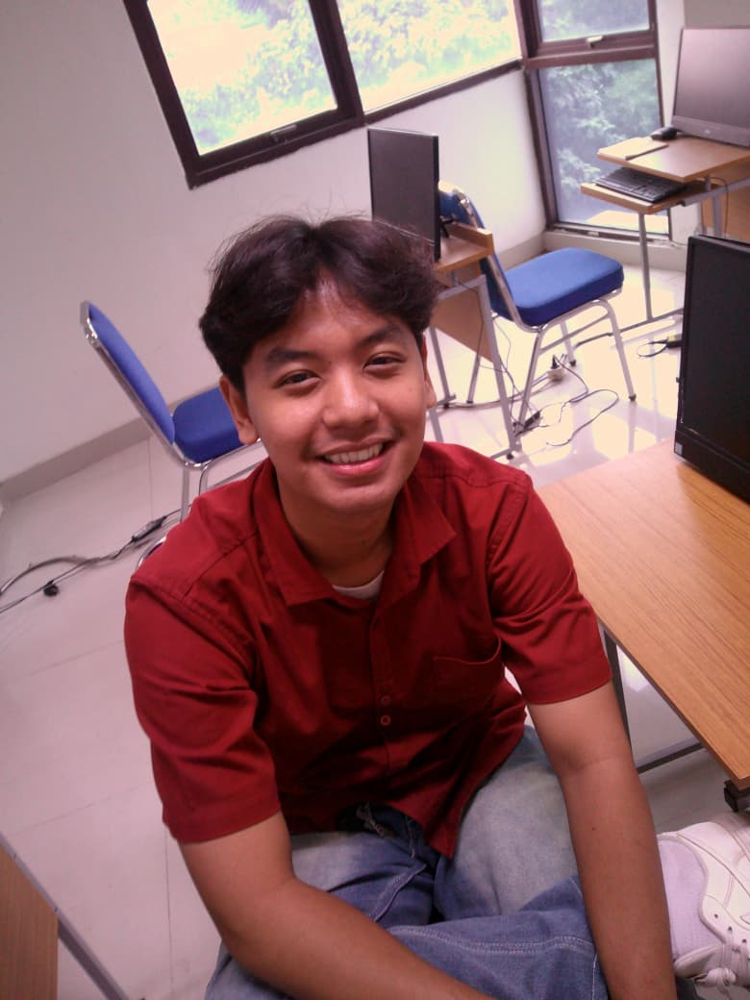
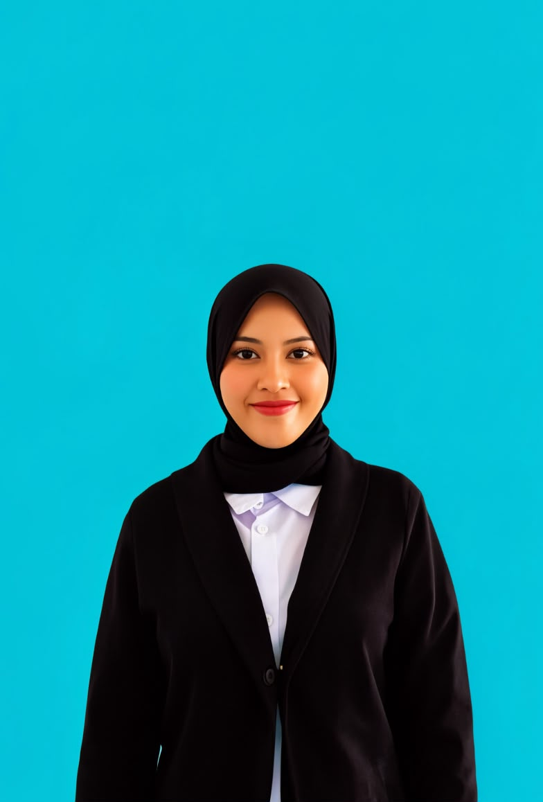

Muhammad Rifky Eliyanto
Depok, Jawa Barat | Jakarta, 12 Mei 2006
+62 878-1469-1115 | rifkyeliyanto12@gmail.com
Riwayat Pendidikan
- 2025 - Sekarang: S1 Manajemen Pendidikan, UIN Syarif Hidayatullah Jakarta
- 2022 - 2025: SMAN 1 Pangkah
- 2019 - 2022: SMP Negeri 1 Pangkah
- 2013 - 2019: SD N Bogares Kidul 02
Pengalaman Organisasi
- 2023 - 2024: Ketua Ekstrakurikuler Basket SMAN 1 Pangkah
- 2025: Asisten Pelatih Basket di MAN 1 Tegal
- 2022 - 2023: Anggota OSIS Sekbid 4 SMAN 1 Pangkah
- 2020 - 2021: Anggota OSIS Sekbid 3 SMPN 1 Pangkah
Prestasi & Keahlian

Jilly Abda Al Pawaz
Data Analyst & Educational Management Research
abdaalfawaz@gmail.com | +62 854-4510-8984 | Live Portfolio
Ringkasan Profesional
Mahasiswa S1 Manajemen Pendidikan UIN Jakarta dengan fondasi manajerial kuat dan ketertarikan tinggi pada Data Analytics. Berpengalaman magang di bidang HRGA serta menguasai pengolahan data dengan Excel, MySQL, Python, dan Power BI.
Pengalaman & Magang
- PT Pilar Niaga Makmur: Staff HCGA (Internship)
- Generasi Muda Bela Negara TNI: Scripting & PDD Staff
- Involuntir Jakarta: Volunteer Petualangan Satwa Edukatif
Keahlian Teknis & Tools

Rianti Devi Lestari
Cengkareng, Jakarta Barat
+62 852-1381-2231 | riantidevilestari@gmail.com
Ringkasan Profil
Mahasiswa Manajemen Pendidikan UIN Syarif Hidayatullah Jakarta yang memiliki pengalaman luas dalam mendidik anak usia dini. Berdedikasi tinggi, komunikatif, serta memahami karakter dan kebutuhan belajar anak secara interaktif.
Pengalaman Kerja & Pengabdian
- Pengajar TK - TK Harapan Jaya (2024 - Sekarang): Mendampingi pembelajaran harian dan membimbing mengaji anak.
- Pengajar Les Privat (2024 - Sekarang): Membimbing siswa memahami materi sekolah sesuai kebutuhan.
Pendidikan Formal
- 2025 - Sekarang: S1 Manajemen Pendidikan, UIN Syarif Hidayatullah Jakarta.